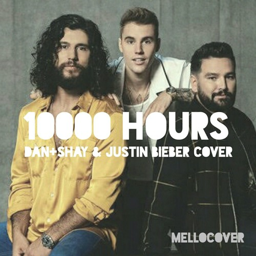
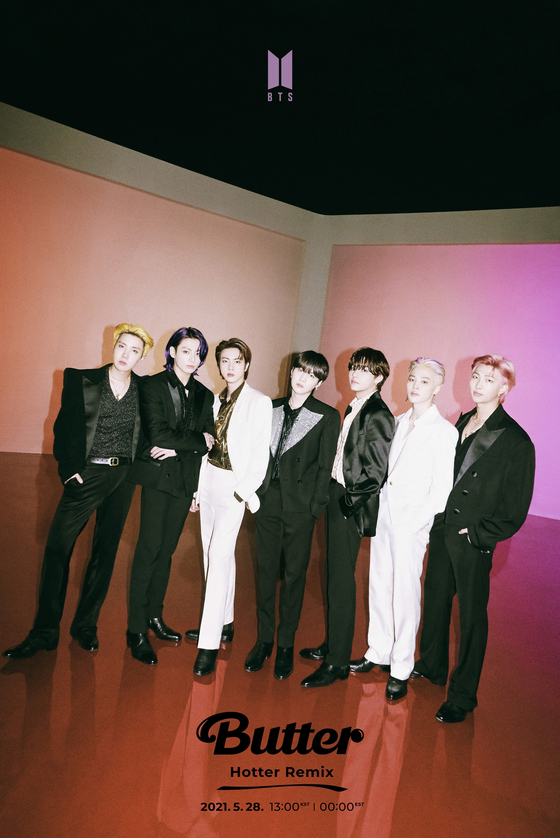

- Euphoria by Jungkook
- Off my Face by Justin Bieber
- Dynamite by BTS
- 10000 Hours by Dan&Shay Ft. Justin Bieber
- Life Goes on by BTS
- Butter by BTS
- KICK BACK by Kenshi Yonezu
- Give me Your Forever by Zack Tabudlo
- Every Summertime by NIKI
- Leave the Door Open by Bruno Mars



